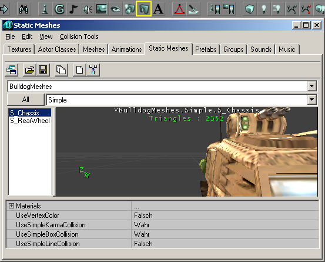

Add A Static Mesh
This is a Basic Procedure tutorial page. It explains how to perform a single procedure which is required in many different contexts.
Overview
- Static Meshes are resources, just like textures or sounds, stored in packages. When you add one to your map, you're actually placing something that refers to the mesh resource.
- You'll be given a mesh name in the form Package.Group.Mesh Name or Package.Mesh Name.
Instructions
To place a static mesh in your map:
- Open the static mesh browser by doing one of:
- UnrealEd Main Menu → View → Static Mesh Browser
- Press the Static Mesh Browser button in the middle of the toolbar at the top of the Editor window. It looks like an arch, to the left of the "A".

The static mesh browser. The currently selected mesh is from the AbbadonHardware package, the Beams group, and the mesh itself is ASupport03AB. This is written as "AbbadonHardware.Beams.ASupport03AB". |
- Do [Static Mesh Browser Menu]? → File → Open, select the package you want, click Open. (If you've already loaded this package, you can skip this step of course.)
- Select the group you want from the drop-down menu in the static mesh browser
- Within the static mesh browser scroll down the list of meshes on the left hand side of the browser until you find the mesh.
- Highlight the mesh by left clicking once on its name. You can see the mesh in the main part of the window, and use the mouse to zoom or move around it.
- Close the static mesh browser or move it out of the way
- Find the spot where you want to place the mesh, and there do Viewport Context Menu → Add static mesh: {name of the mesh currently selected in the browser}
Alternative methods
Aside from the method above, you could also:
- Copy and paste an existing instance of the mesh in your map, or from another map
- Add an Actor >> StaticMeshActor and then Set the resource property Display → StaticMesh. For example, you can change the static mesh an already placed StaticMeshActor is displaying.
Settings
You can now alter the appearance of the mesh:
- location – just move the actor, or set Movement→Location
- rotation – just rotate the actor, or set Movement→Rotation
- size – set Display→DrawScale or Display→DrawScale3D
Related Topics
- List of all of Epic's Static Mesh Packages
- Static Mesh Package/Index, to help you find your way in them